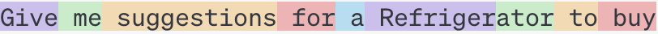
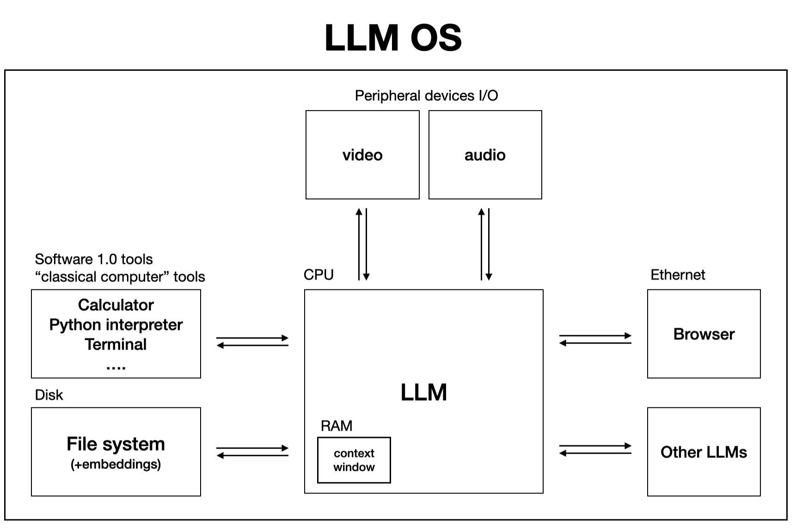

If you’ve ventured into the realm of AI with GPT-4, you’re likely astounded by its capabilities compared to the free version. It’s not merely the model’s intelligence that’s seen a significant boost, but also the surrounding infrastructure. Now, it can scour the internet for real-time information, analyze files, execute code, solve mathematical problems, and even act like a human in its quest for answers – only much faster. Of course, this enhanced experience comes at a cost, priced at $20/month.
Having been on the scene for nearly a year, it’s no surprise that the next iteration, whether it’s GPT-5 or some other name, is on the horizon. The release cycle for such large-scale models is understandably lengthy, as they demand an immense amount of time and computational resources. Companies typically undertake the arduous training process once a year.
To truly grasp the monumental effort required to produce a model like GPT-4, let’s delve into the high-level training process:
High-level Training Process for a Model like GPT-4:
First Stage: Pre-training (Performed Annually)
- Accumulate 100TB of internet data (mostly low-quality)
- Web crawling via platforms like Common Crawl
- Train a transformer neural network on this data
- Requires upwards of 60K GPUs (costing over $100 million)
- Training spans months, with challenges in managing such a vast array of GPUs cohesively
- The primary objective of the transformer is to predict the next token in a sequence
- This yields a base model, albeit functionally limited
- Capable only of completing text prompts
- Conduct this stage annually due to its expense and time-intensiveness
Interacting with this base model might yield results like:
User: Who was the first president?
AI: The president of the United States is the head of state and head of government of the United States,....
Note: An example text converted into tokens which GPT-4 understands:
“Give me suggestions for a Refrigerator to buy”

“[36227, 757, 18726, 369, 264, 75258, 859, 311, 3780]”
Second Stage: Fine-tuning (Performed Weekly)
- Gather 100k high-quality Q&A pairs
- Contract many experts in many fields to answer these questions correctly and with great precision
- Providers like scala.ai offer such datasets
- Continue training the base model from stage one using this refined data
- Continues to refine the weights of the transformer network
- Training typically concludes within a day
- Assemble 1M high-quality comparative prompts
- These entail questions with multiple potential answers, with one being deemed optimal
- Human experts curate the best responses for each prompt
- Train a reward model (RLHF model) on the collected comparative data
- The objective is to predict the most suitable answer
- Collect 100k prompts (sans responses) and continue training the transformer model to predict the next token using the trained reward model to generate tokens that maximize the reward
- This culminates in a model akin to GPT-4
- Repeat this fine-tuning process on a weekly basis
The bulk of the financial and engineering investment for a model like GPT-4 (roughly 99%) is allocated to the initial pre-training stage.
Despite primarily being text-based, GPT-4 exhibits remarkable versatility by seamlessly integrating image and audio processing capabilities. How does it achieve this feat, you might wonder? Well, behind the scenes, there are specialized models dedicated to handling such inputs. For instance, when presented with an image, GPT-4 relies on a secret auxiliary model trained explicitly to generate detailed captions for images. This model serves as the bridge between visual data and GPT-4’s text-based processing, enabling it to comprehend and respond to image-based queries. Similarly, for audio inputs, another discrete model is at play. This model is trained to convert voice inputs into highly accurate text transcripts, which are then fed into GPT-4 for further analysis. Consequently, whether it’s deciphering text, interpreting images, or understanding spoken words, GPT-4 seamlessly navigates across various modalities to deliver comprehensive responses.
Furthermore, GPT-4 isn’t just a passive responder; it’s equipped with an arsenal of tools that enhance its functionality and user experience. For instance, integrated internet search capabilities enable GPT-4 to fetch real-time information from the vast expanse of the web, ensuring that its responses are always up-to-date and relevant. GPT-4 does not know how to fetch documents from the interent but knows what tool to call on for such tasks and then process the text response from that tool. Additionally, its ability to execute code expands its utility beyond text-based interactions, allowing users to perform computational tasks directly within the AI environment. For GPT-4, OpenAI provides and manages a containerized compute environemnt, transparant to the user, where your code can run and the result is fed back into GPT-4. These tools, intricately woven into GPT-4’s framework, contribute to its transformation from a mere chat assistant to a sophisticated operating system-like entity. In this analogy, the GPT-4 model serves as the central processing unit (CPU), orchestrating tasks and seamlessly interfacing with various input-output mechanisms. As advancements continue to refine both the core model and its auxiliary functionalities, the evolution of GPT-4 promises not only enhanced intelligence but also a more intuitive and seamless user experience. The key of course relies on the CPU being powerful enough to power this OS.
I got influenced by the idea of LLM OS first by non other than Andrej karpathy :-)

[a slide from Andrej karpathy]